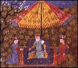

Upcoming stories
First Invasion of Japan: What Went Wrong?
Fermented Mare's Milk: A Mongol Drink for All Occasions
Grand Canal Nears Completion, Links Northern and Southern China
Silk Road Reopens. Textile Trade with Persia and China Flourishes. |
| Weather report: Storm system expected to by-pass Sea of Japan (soon to be renamed) |
|
An interview with the Great-Khan on the eve
of the Mongol victory in Japan
|

The Granger Collection
|
MNN: What are your
thoughts as your army advances on Japan?
Kublai Khan: I have shown the world that
I can capture a city without shedding blood. Whether this
will happen again is up to the shogun and his samurai.
|
MNN: What do you believe are some of
the Mongols' greatest strengths?
Kublai Khan: We believe in absorbing a defeated people
into our empire rather than exterminating them. The defeated soldiers
then become a part of our army, making us stronger and more versatile.
Every people has its own knowledge of tactics and weaponry. By absorbing
this knowledge, we become wiser and more powerful.
MNN: How has the life of your grandfather Genghis
Khan influenced you?
Kublai Khan: The exalted Genghis Khan stands as the
greatest Mongol of all times. My grandfather was abandoned by his
tribe after he became chief at the age of 13. He helped his family
survive many harsh years. Gradually, through his skill as a leader
and his remarkable personality, he began to win the respect and loyalty
of other warriors. Over time, he unified and organized scattered tribes
into a superior fighting force. He then used his army to extend his
power even further. By 1206, he had become ruler of Mongolia. That
year, the Mongol chiefs proclaimed him khan of all the tribes.
MNN: What were some of his greatest conquests?
Kublai Khan: All his conquests were great. From Karakorum,
he extended his empire from the capital of the Jin Empire in the east
to the land of the Russians beyond the Caspian Sea in the west. I
have continued to expand the rule of the Mongols, and in 1279, at
last, I brought the Song dynasty of China to its knees.
|